Richard D. Paris Jr.
Visual Arts Portfolio
Visual Arts Portfolio
My artworks are made from different modules where I explored the basics of visual arts. Each activity helped me practice different skills such as drawing, making compositions, taking and editing photos, and creating simple digital designs. Through these tasks, I learned how to express ideas visually instead of just relying on words, and how small details can affect the overall result of an artwork. Some of my outputs are based on real-life observation, while others are more creative or abstract depending on the module requirements. I also tried to include Filipino-inspired elements in some of my works to show culture and identity in a simple way. The process documentation shows how I developed my ideas step by step from rough sketches or drafts to the final output. Overall, this portfolio shows my progress as a beginner in visual arts. I’m still learning, but each module helped me improve my creativity, patience, and understanding of different styles and techniques.
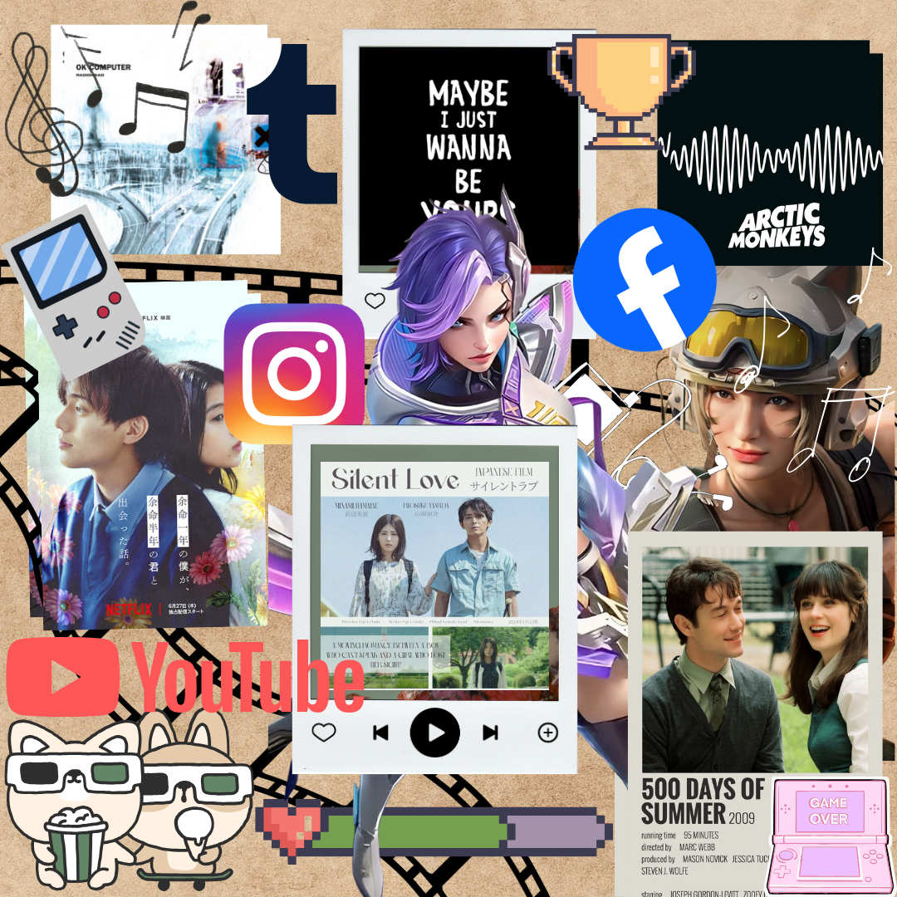
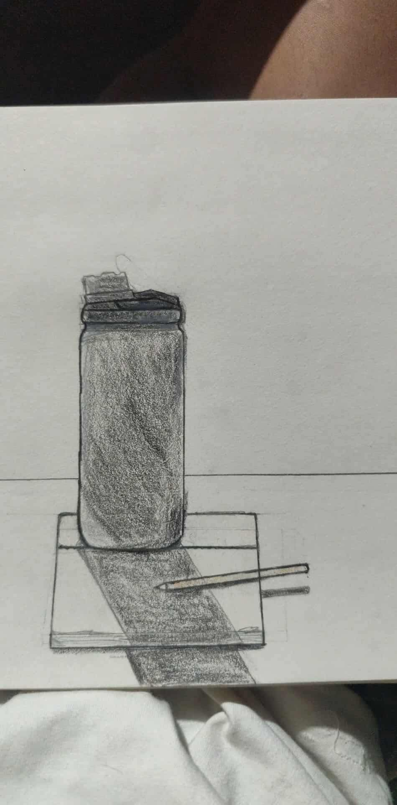
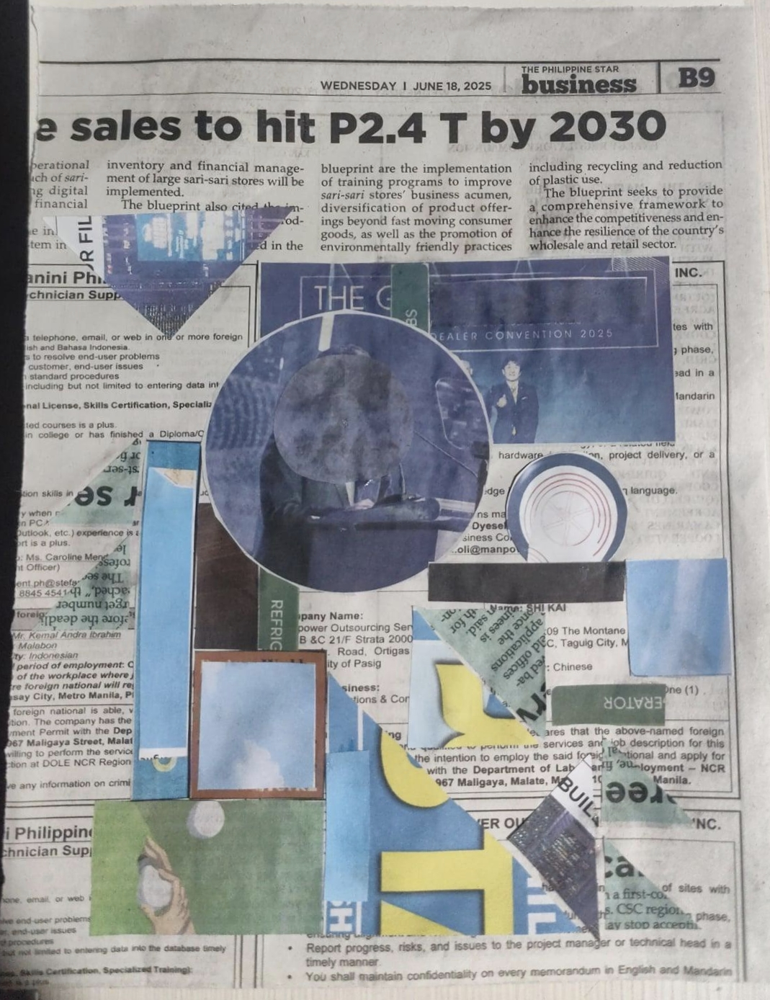
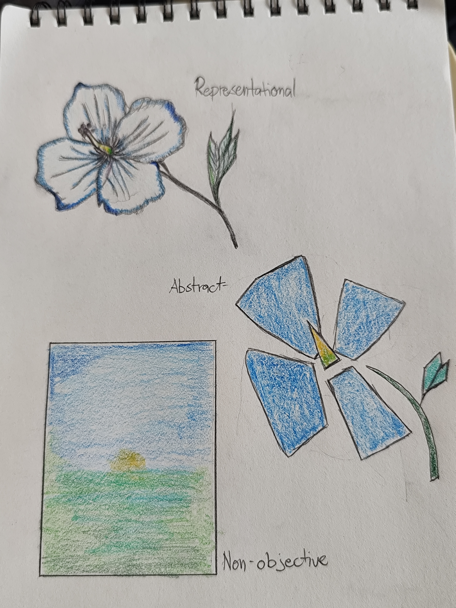
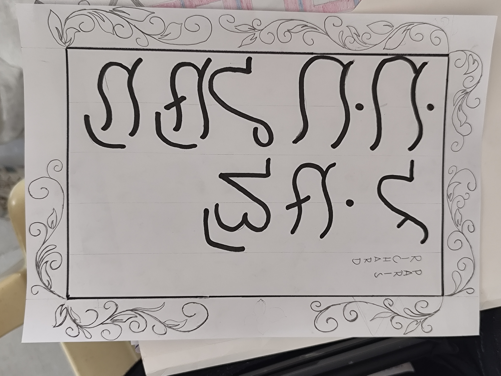

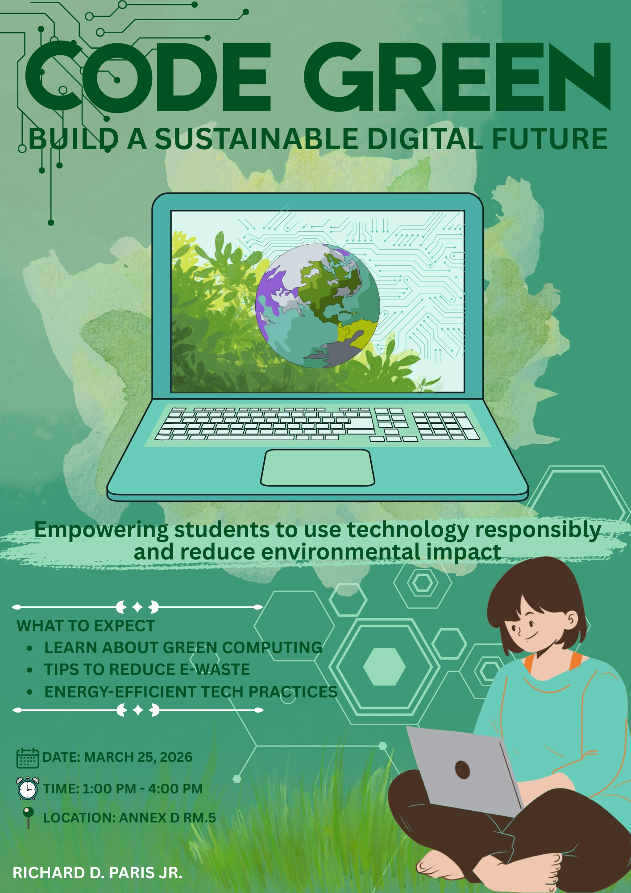

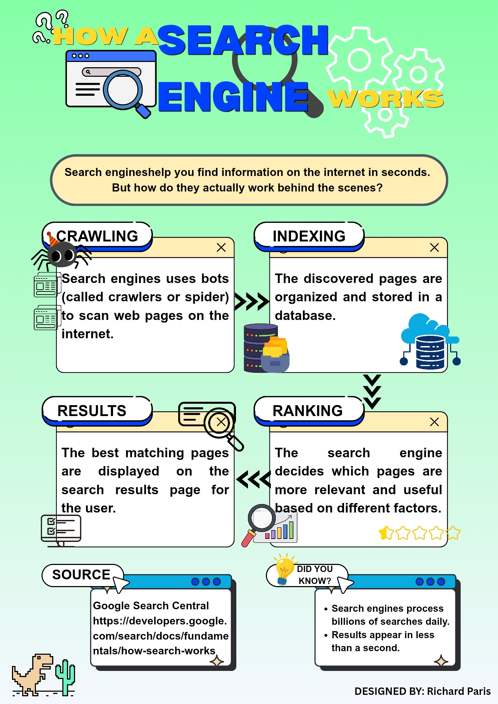
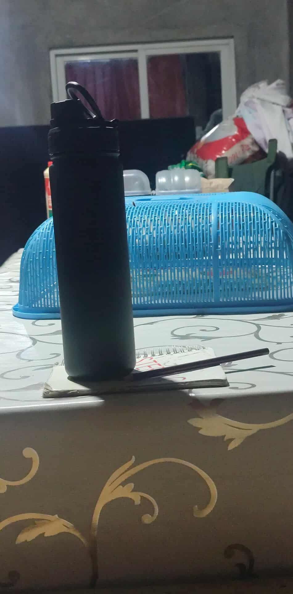
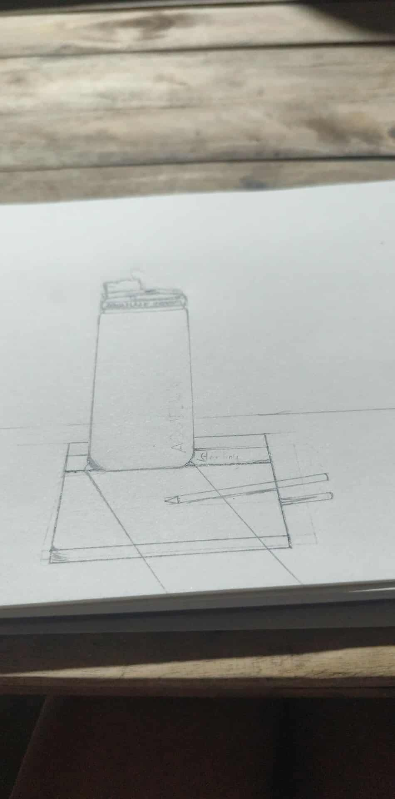
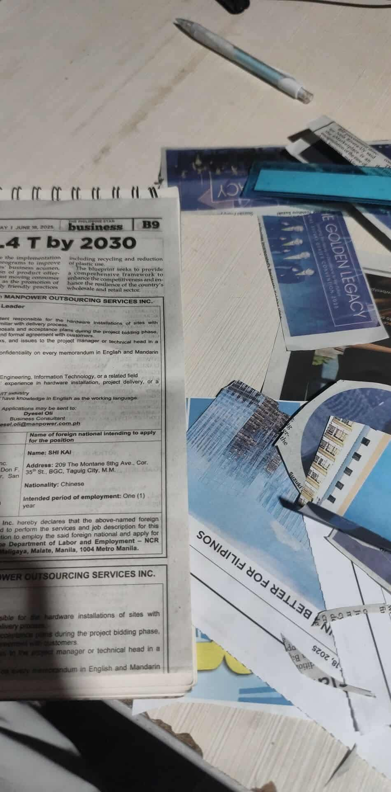
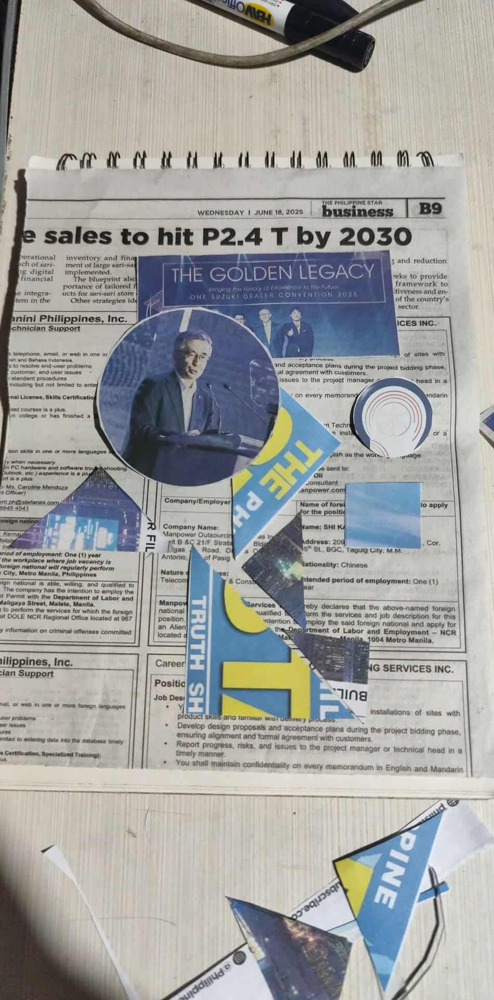
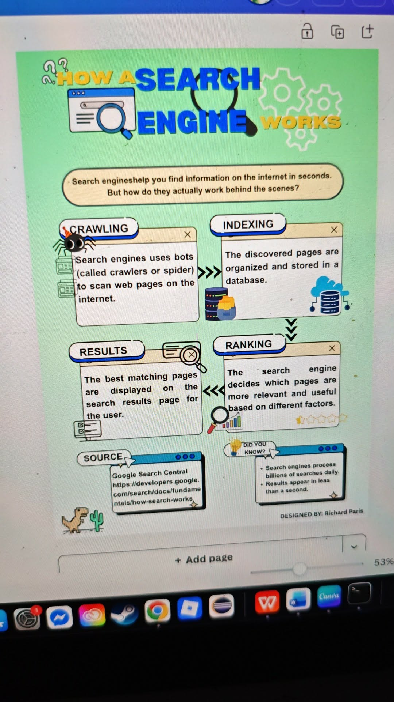
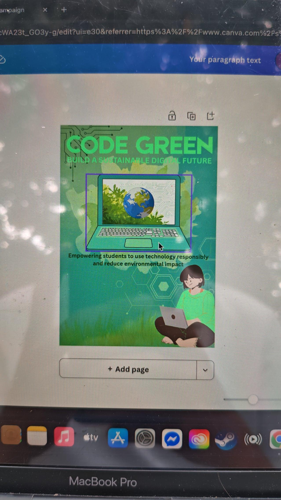
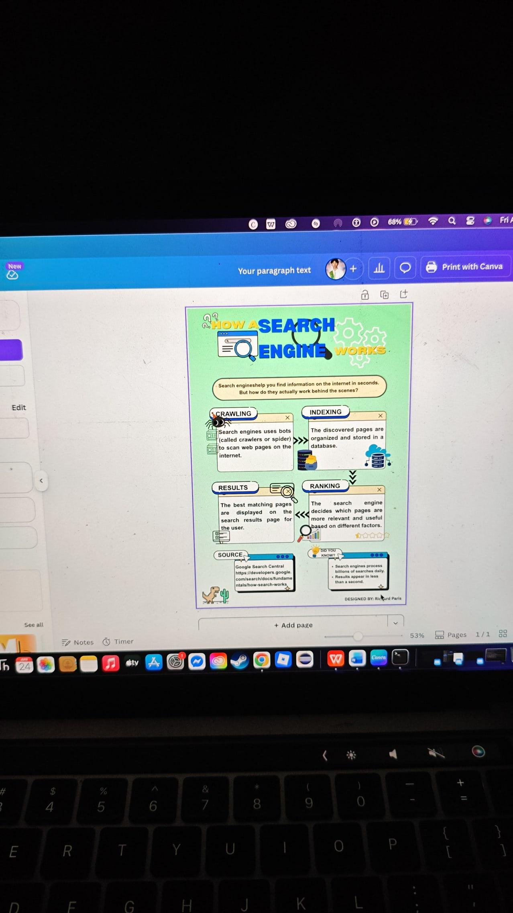
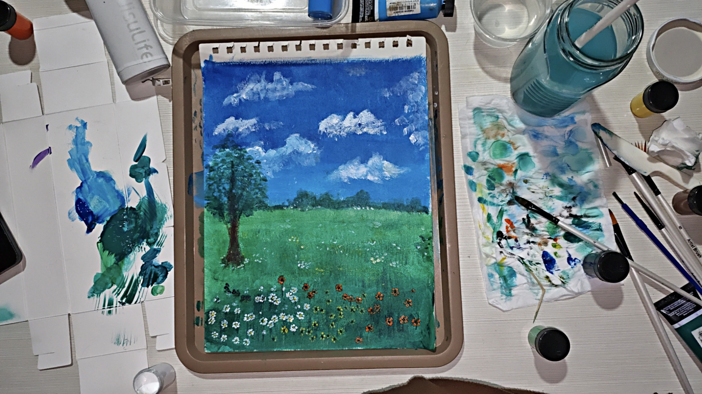
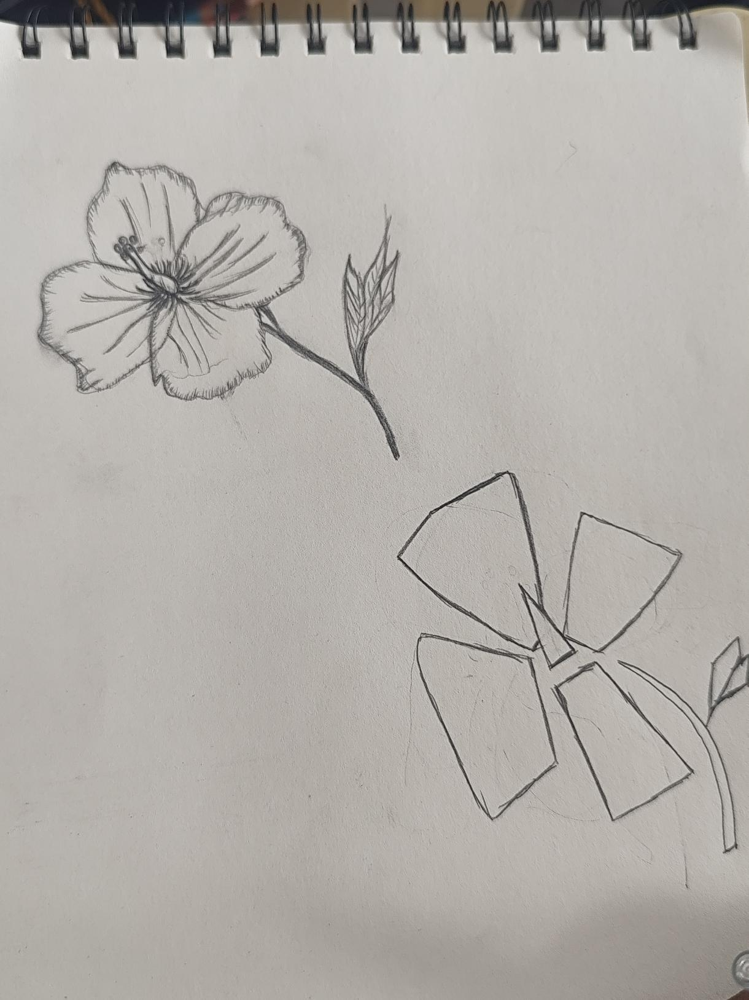